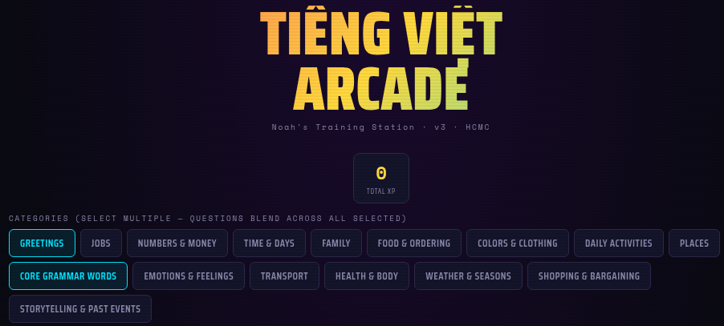

Teaching Apps and Learning Games
These are browser-based tools I have built for classroom use and student self-study, deployed directly with my students at ILA Vietnam.

Language Learning Suite
A custom client-side suite of web applications built from scratch vanilla JS with no frameworks or build tools to be self-contained so any teacher can deploy it with nothing more than a classroom laptop or PC. It is comprised of three tools:
- a teacher-run classroom game platform with game and scoring method interfaces as well as 7 playable games,
- a student-facing self-study arcade,
- and a teacher authoring tool for building and editing unit content.

Zombie Survival Game
A choose-your-own-adventure reading game for B1 English learners, in which students navigate survival scenarios that require engaging with the unit vocabulary, collaboration with their peers, and critical thinking skills. The game incorporates movement via a sticky-ball throw that can replace the game's dice-roll luck mechanism.

Vietnamese Learning Arcade
A browser-based arcade activity I built for my own Vietnamese learning and practice.